Виджеты и шаблоны¶
Виджеты¶
Блиц Бюджет для Android содержит удобный виджет для отображения фактических остатков, оборотов и быстрого создания новой операции.
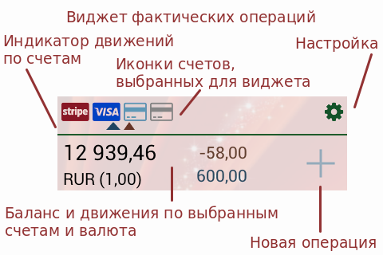{kind=link}
Виджет доступен в различных размерах, 1x1, 1x2 и 1x4 ячейки. Оформление виджета совпадает с темой приложения.
Благодаря гибким настройкам виджет можно использовать не только как сводку, но и как краткий отчет или шаблон новой операции. Примеры будут рассмотрены ниже.
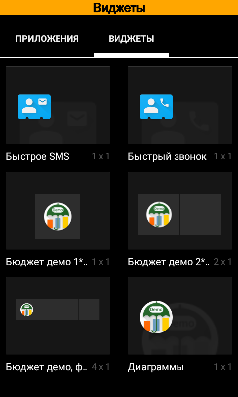 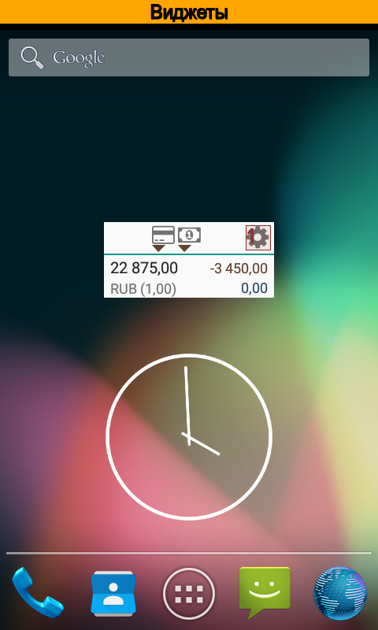 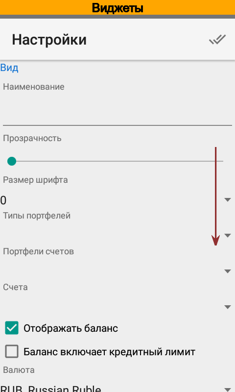{kind=link}
{kind=link}
{kind=link}
После создания в виджете отображаются текущий остаток и движения денежных средств в основной валюте за текущий день. Для изменения этих настроек служит кнопка .
В разделе Вид можно задать основные параметры виджета.
Наименование удобно использовать, если на экран выведено несколько виджетов. При желании можно оставить это поле пустым.
Типы портфелей, Портфели и Счета служат для базового ограничения отображаемой в виджете информации. Можно указать один из параметров или их комбинацию. В разных экземплярах виджета могут использоваться разные ограничения. Так, например, на экран можно вывести два виджета, один будет показывать информацию по одному счету, другой — по другому.
Отображать баланс служит для включения и отключения расчета баланса, также можно конкретизировать как именно рассчитывать баланс, с учетом кредитного лимита или без. По умолчанию кредитный лимит не учитывается в балансе, т.е. для кредитных карт отображается отрицательный остаток.
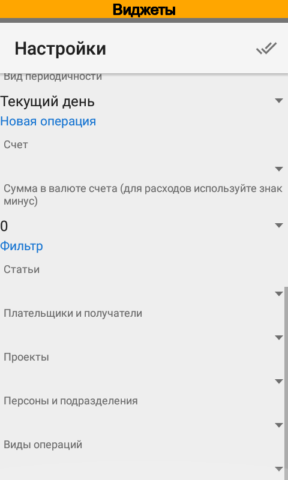 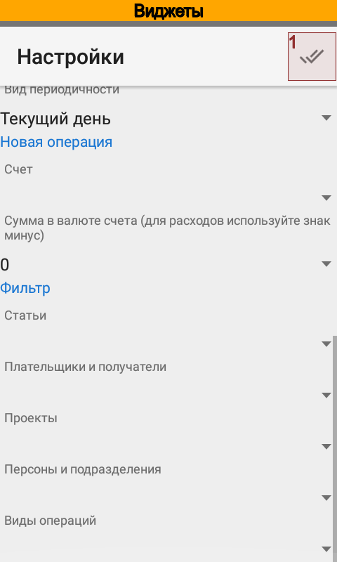{kind=link}
{kind=link}
Использование виджетов в качестве шаблонов операций¶
Виджет содержит кнопку . Эта кнопка доступна после того, как в настройках будет указан счет для создания новых операций. При желании можно указать сумму новой операции, которая будет автоматически установлена при открытии карточки новой операции.
Также в новую операцию будут скопированы значения фильтров.
Таким образом, задав счет, сумму и фильтры, возможно использовать виджет для создания новой операции по шаблону. Все поля новой операции будут сразу заполнены.
Примечание
Использование виджетов для создания новых операций по шаблону доступно в версии Pro. В версии Free доступно создание новых операций без заполнения по шаблону.
Использование виджетов в качестве отчетов¶
Гибкие настройки позволяют использовать виджеты в качестве отчетов с заранее сохраненными настройками. Для этого служат параметры расположенные в разделе Фильтр.
Примечание
Использование виджетов в качестве отчетов доступно в версии Pro
Пример использования виджета в качестве отчета¶
Рассмотрим в качестве примера настройку виджета для отображения расходов на общественный транспорт в течение текущего месяца. Откроем настройки виджета и зададим название Общественный транспорт.
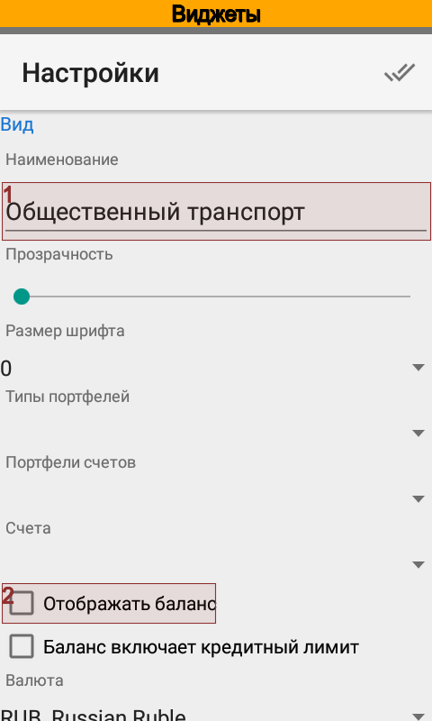 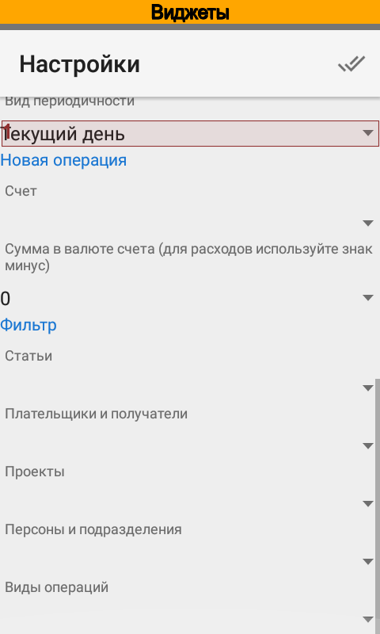 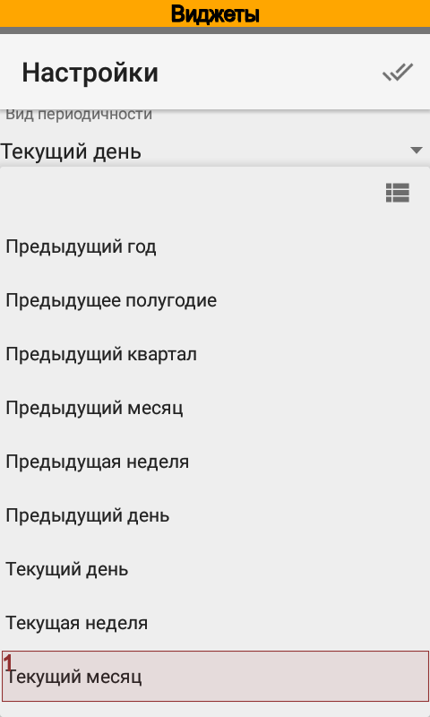{kind=link}
{kind=link}
{kind=link}
Общее количество потраченных денежных средств на общественный транспорт с начала ведения учета нас не интересует, поэтому отключим отображение баланса.
В качестве периода выберем текущий месяц.
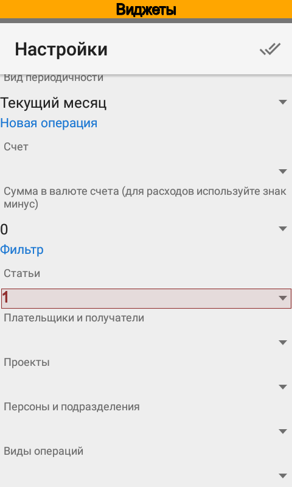 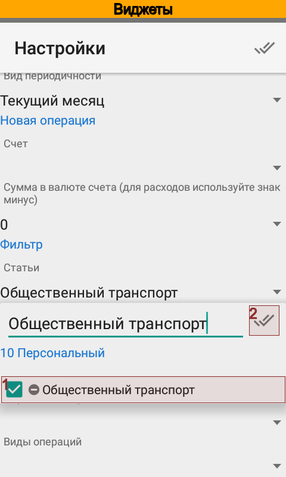 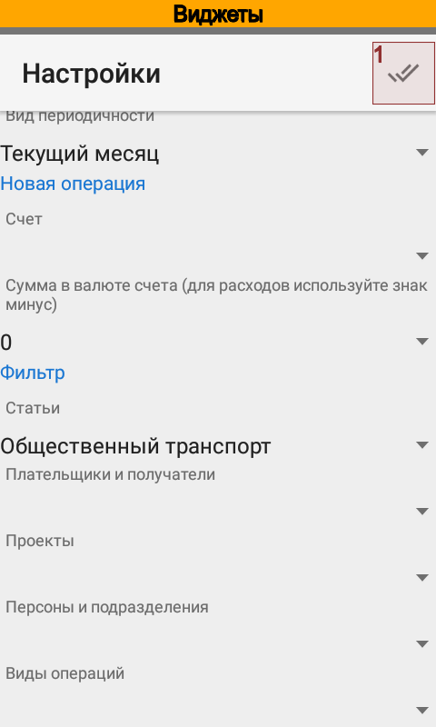{kind=link}
{kind=link}
{kind=link}
В настройках фильтра зададим статью Общественный транспорт и сохраним настройку.
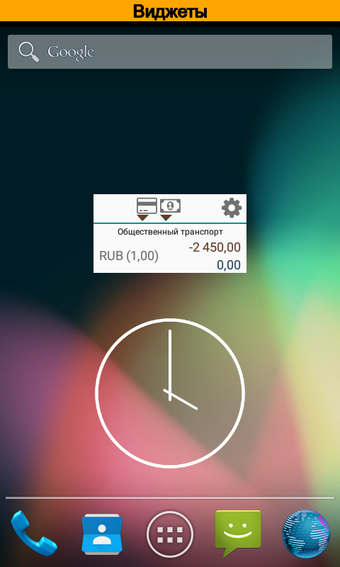{kind=link}
Теперь виджет отображает движения только по статье Общественный транспорт за текущий месяц, мы видим конкретную сумму расходов и два счета, с которых оплачивался транспорт.
Пример использования виджета в качестве шаблона¶
Теперь изменим настройки виджета так, чтобы мы могли не только видеть расходы, но и быстро их создавать. Для этого снова откроем настройки.
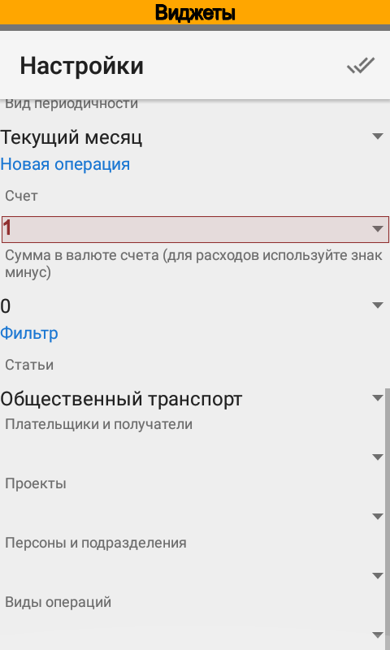 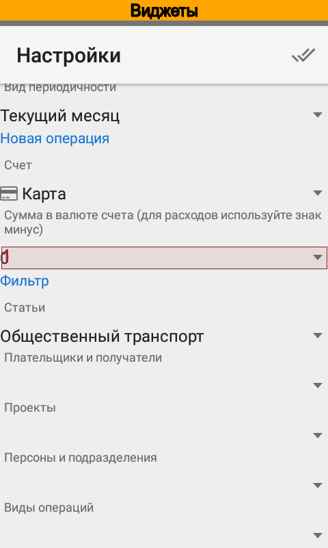 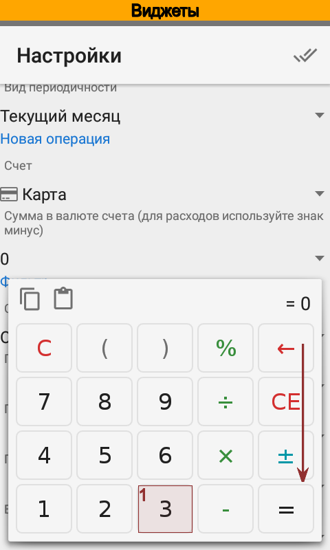{kind=link}
{kind=link}
{kind=link}
Зададим счет, с которого чаще всего будет происходить оплата транспорта. После этого укажем сумму, которая будет подставлена в новую операцию.
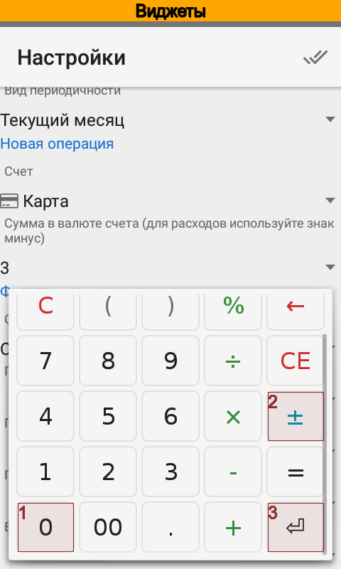 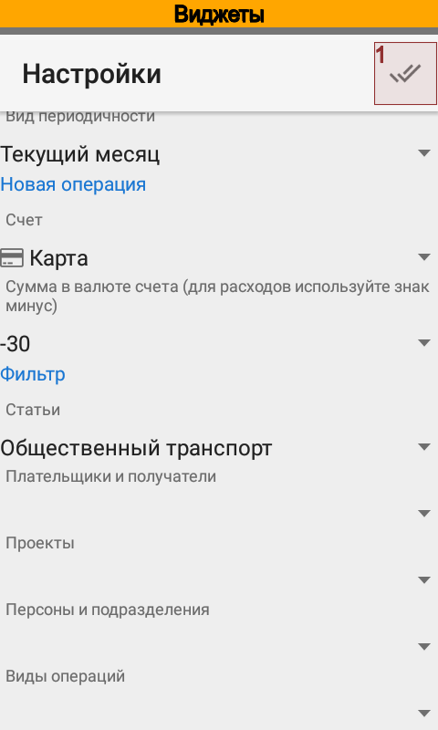 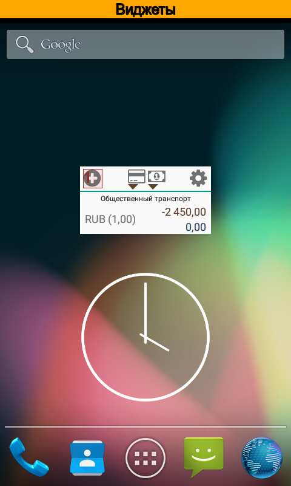{kind=link}
{kind=link}
{kind=link}
Сохраним настройки. Теперь в виджете появилась кнопка добавления новой операции.
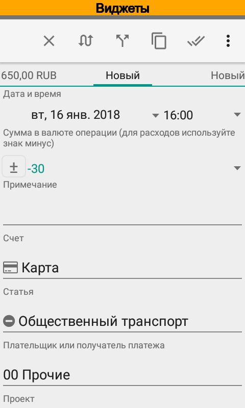{kind=link}
Добавляем новую операцию из виджета. Видно, что в новой операции автоматически заполнились счета, сумма и статья. Осталось только сохранить новую операцию.
Аналогичным образом можно задать контрагентов, проекты и персоны, которые будут подставлены в новую операцию. Для каждого шаблона следует создать свой виджет.